公开博弈
看得见的局，猜不透的手
绝大多数落子公开可见。真正的较量在于读懂对手想成什么卦，以及他是否在故意误导你。
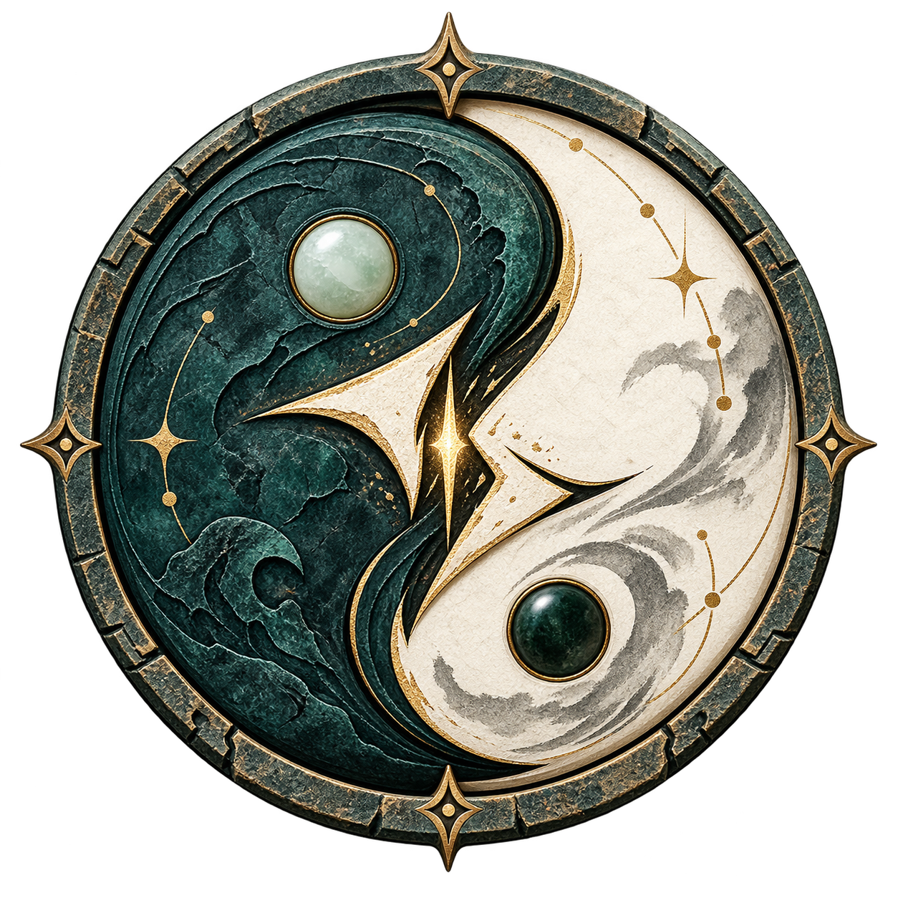

星宿为子，阴阳为势，八卦为谋。两名玩家在天、人、地三位连续落子，于公开信息与战争迷雾之间布局、诱导与反制。
《天弈对决》是一款围绕传统星宿、阴阳、四象与八卦构建的双人策略对战桌游。双方共享同一套星宿牌库，却通过不同的角色与命格构筑走向完全不同的战术路线：你可以抢速度先手压制，也可以伪装卦象、等待反制，或为一回合同宿与四象的爆发预留手牌。
绝大多数落子公开可见。真正的较量在于读懂对手想成什么卦，以及他是否在故意误导你。
一张牌既是攻防疗资源，也是速度时机、阴阳爻位、四象归属与宿名协同材料。
四张携带技能既决定可触发的八卦，也决定你的初始生命与最大生命。
星宿手牌提供每回合的基础行动；角色立绘卡承载角色身份和生命；八卦技能卡则由玩家从八张中挑选四张，构成本局的命格体系。
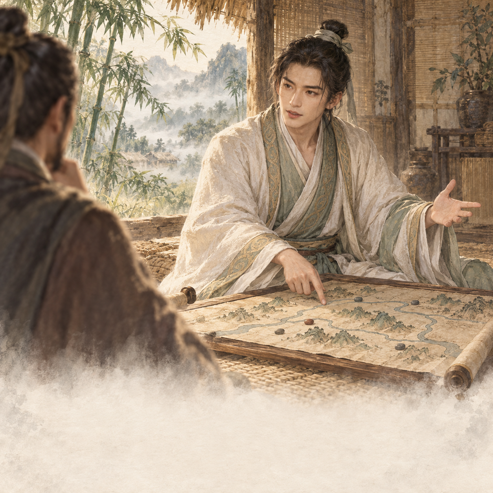
每名角色拥有 8 张，每局选择 4 张。技能卡的卦象、命值、效果与触发时点共同构成角色构筑。
阴牌与阳牌拥有一致的信息结构，只是分别代表阴爻与阳爻，并以不同材质与色调区分。对局时，以下信息都要纳入判断。
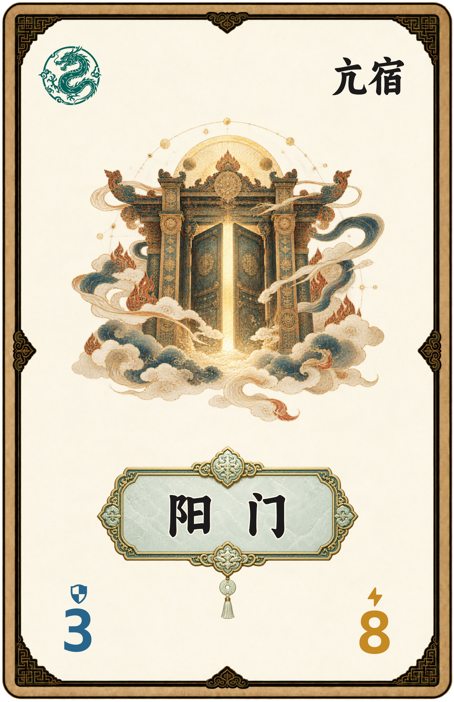
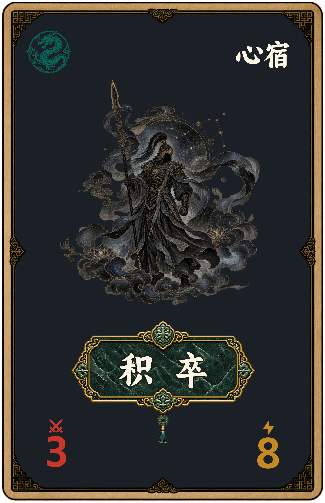
10 最快，1 最慢。六张牌按速度由高至低结算；若速度相同，后手玩家的牌先结算。效果写“速度 +1”时，速度值加 1，最高不超过 10；写“速度 -1”时，速度值减 1，最低不低于 1。
先做好角色与命格构筑，再进入稳定的抽牌—落子—结算循环。下面的时间轴按实际对局顺序展开；首次游戏可按此从上到下操作。
双方各选择 1 名角色，并取得该角色的角色牌与 8 张八卦技能牌。
未携带的命格即使对应八卦形成也不会触发。将选中四张卡上的“命”相加，得到本局初始生命和最大生命（通常为 20–40）。
洗匀 56 张星宿牌组成公共牌库。双方各盲切 1 张并比较速度，速度更高者为先手；相同则重切。先后手整局固定。
第 1 回合不额外补牌，直接从 7 张手牌中各选 3 张进行落子。
通常会从上回合保留的 4 张牌补至 7 张，再从中选择 3 张。牌库耗尽时，将弃牌区洗匀重组牌库。
顺序固定为：先手第 1 张 → 后手第 1 张 → 先手第 2 张 → 后手第 2 张 → 先手第 3 张 → 后手第 3 张。每次可自由放入任一空位，最终地、人、天三位各有 1 张。
每回合，先手至多将 1 张牌扣置入场；它照常占位，但直到双方三张牌都放完前，其全部信息对对手隐藏。随后立即翻开。
扣置牌翻开后，先判定同星宿奖励；再以地→人→天的爻位顺序读取阴阳形成八卦，确认已携带命格；随后判定四象，并处理回合结算前技能。
按 10→1 排序，同速时后手优先。攻击先被防御吸收，防御在回合结束清除，治疗不能超过最大生命。任意时点有人生命≤0，立即结束游戏。
处理回合结算后技能，清除临时状态与剩余防御，将本回合使用的 6 张星宿牌置入弃牌区，保留未使用手牌；若无人失败，开始下一回合。
涉及卦象读取、爻位逐位判定或技能指定顺序时，统一按地位、人位、天位自下而上处理。普通星宿牌的实际出手顺序仍只看速度值。
依地 / 人 / 天三爻的阴阳组合判定：
乾 ☰ 阳阳阳 坤 ☷ 阴阴阴
震 ☳ 阳阴阴 巽 ☴ 阴阳阳
坎 ☵ 阴阳阴 离 ☲ 阳阴阳
艮 ☶ 阴阴阳 兑 ☱ 阳阳阴
| 协同条件 | 效果 |
|---|---|
| 同星宿：本回合三张牌中有两张宿名相同 | 该两张牌的值各 +1，持续至本回合结束。只比较“宿名”，星官名或四象相同不算。 |
| 三苍龙 | 立即攻击 3。 |
| 三白虎 | 己方本回合三张牌速度各 +1，最高为 10。 |
| 三朱雀 | 立即治疗 3，不超过最大生命。 |
| 三玄武 | 立即获得 3 点临时防御，回合结束清除剩余部分。 |
星宿牌提供资源，速度决定时机，阴阳决定卦象，四象创造阵势，命格将角色的历史与战术化为你的选择。下一局，从挑选四张命格开始。
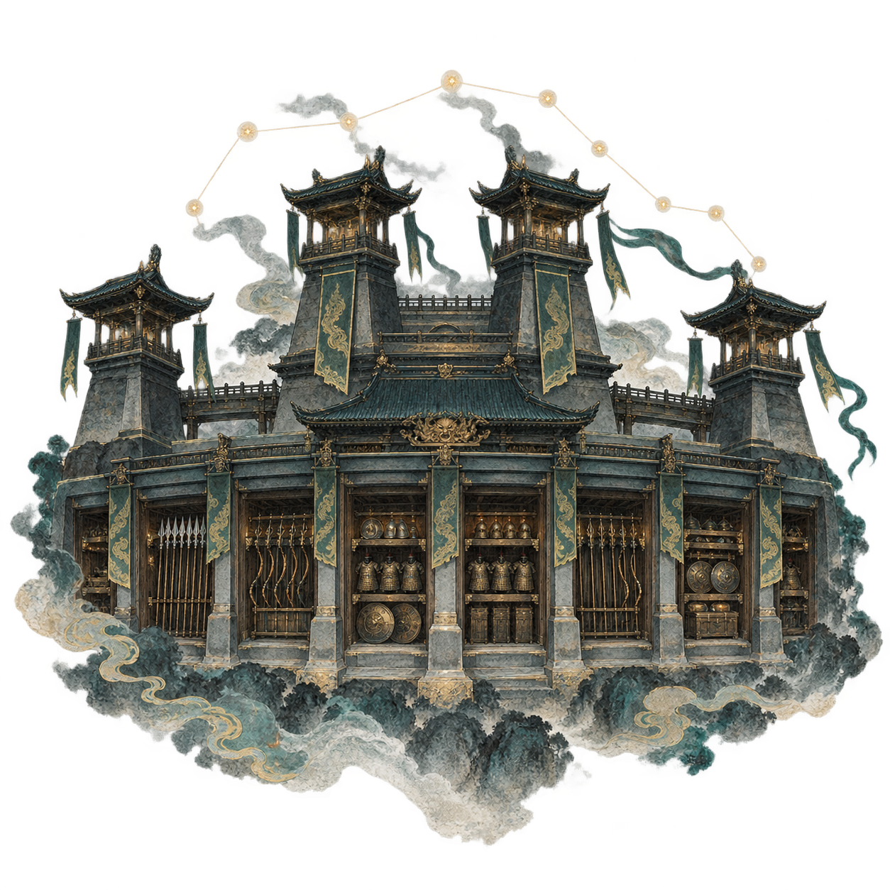
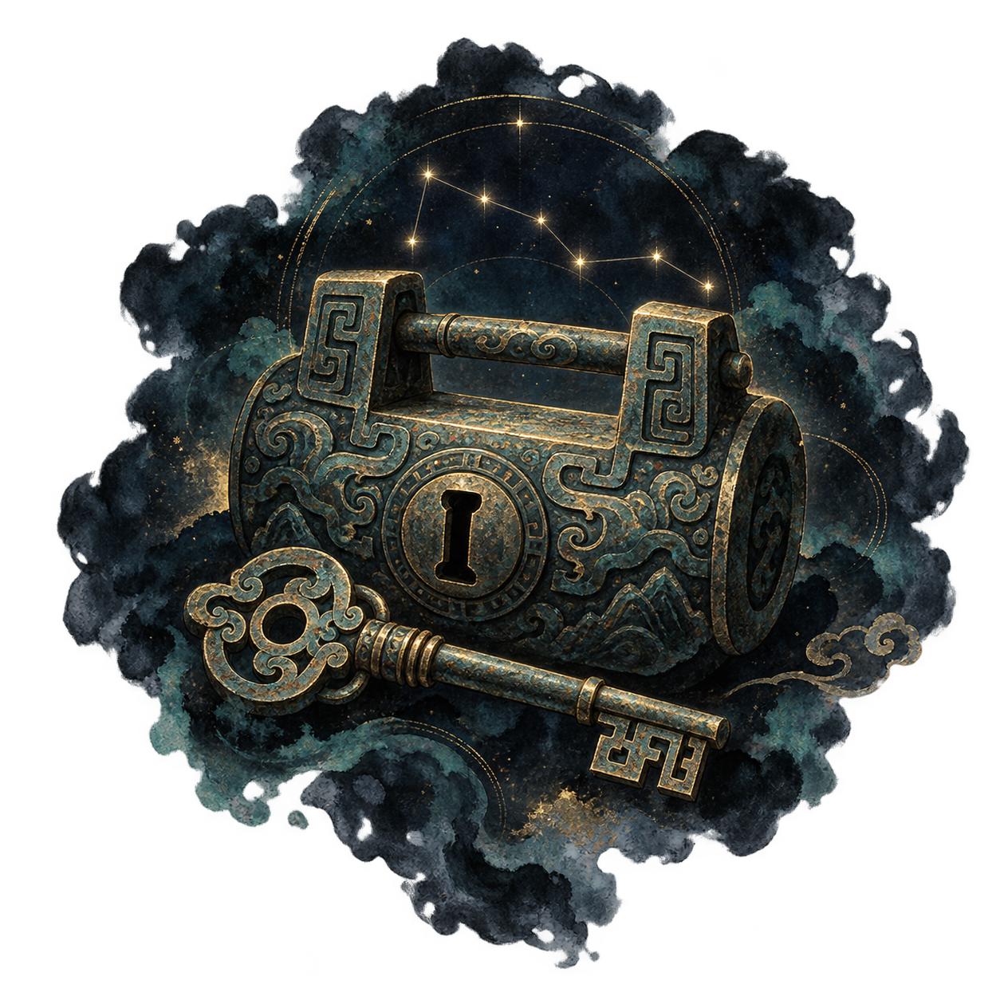
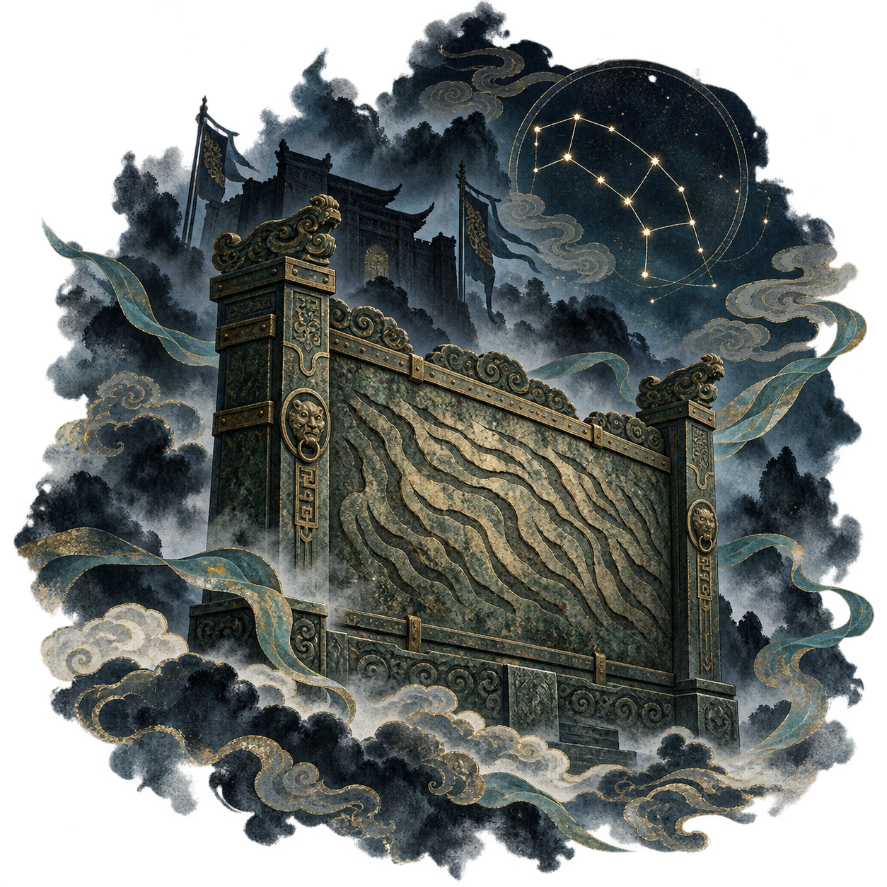
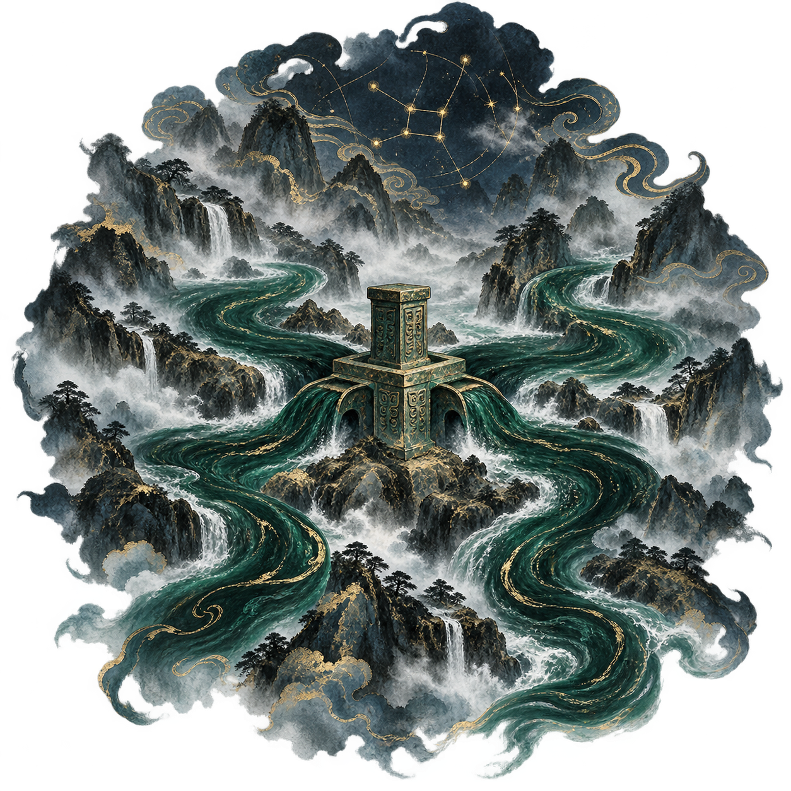
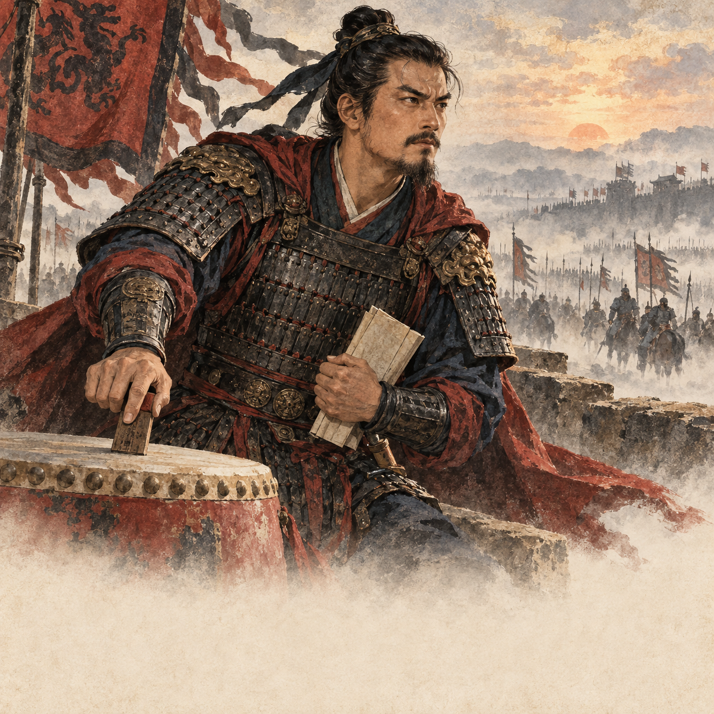
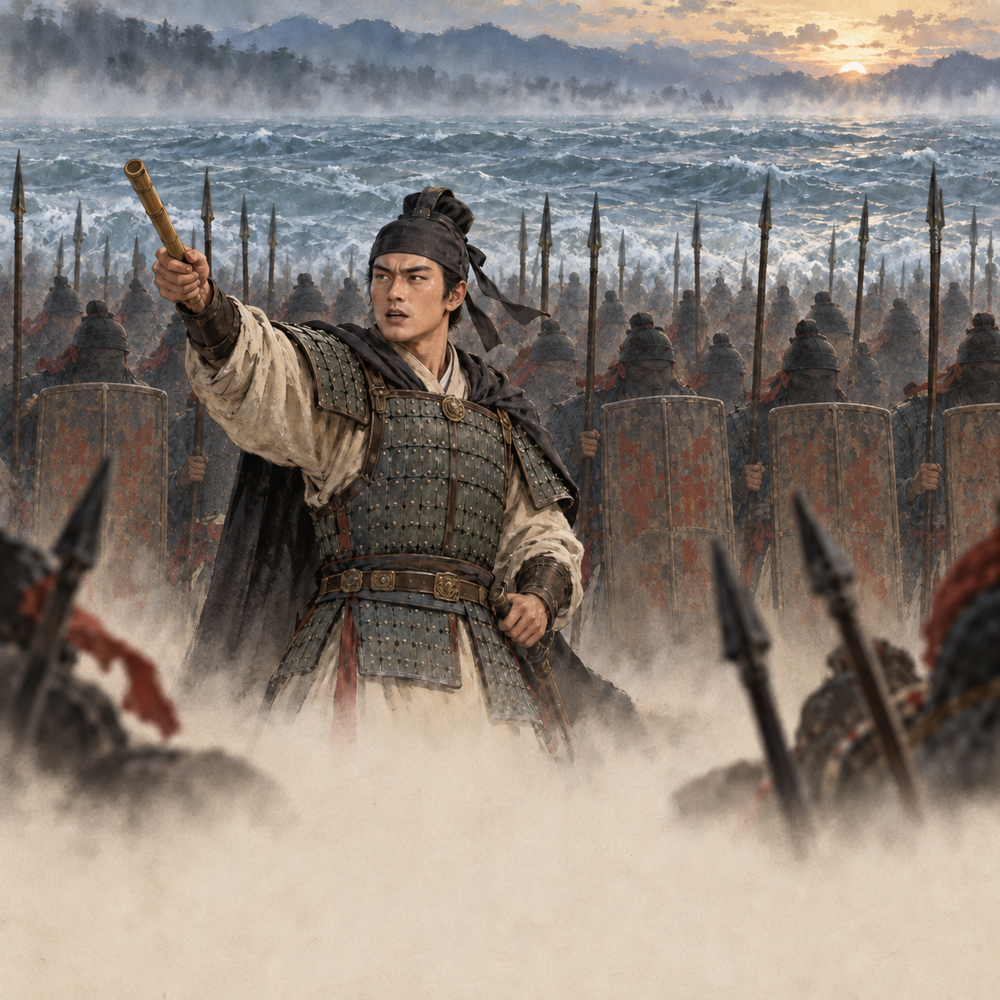
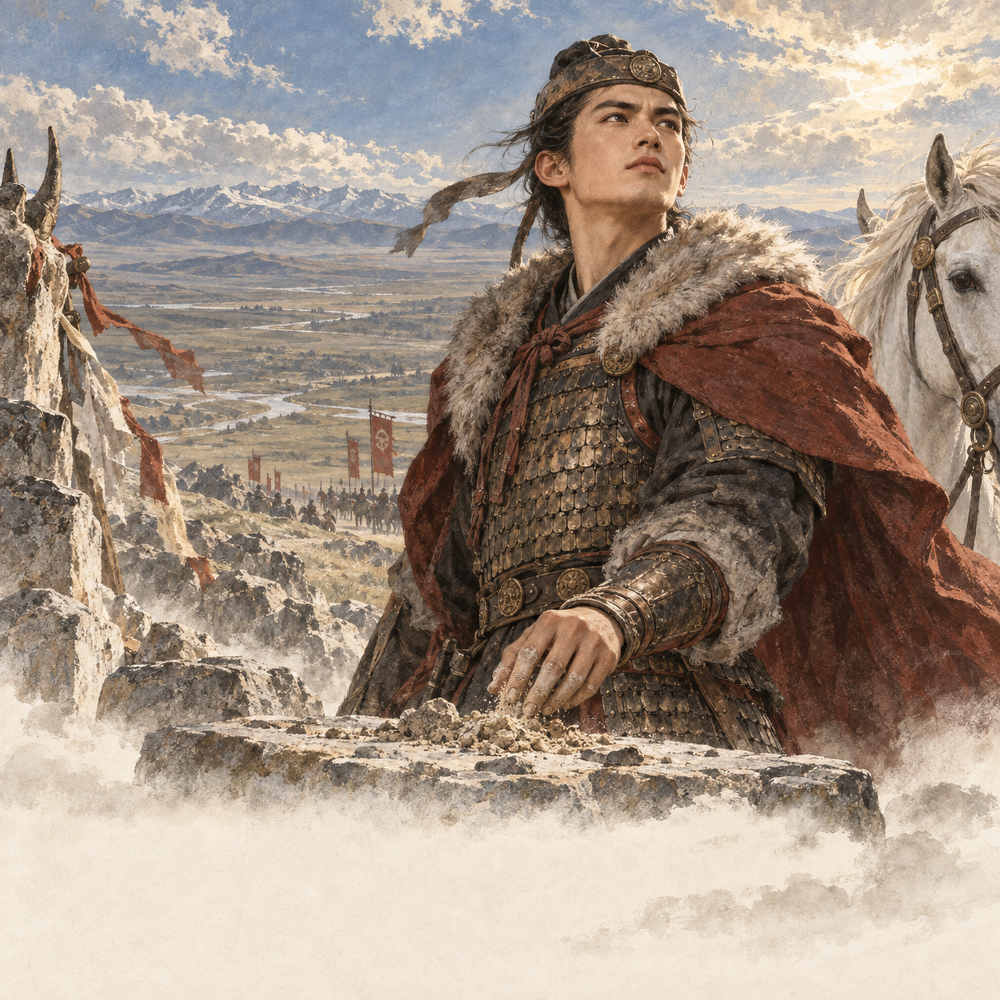